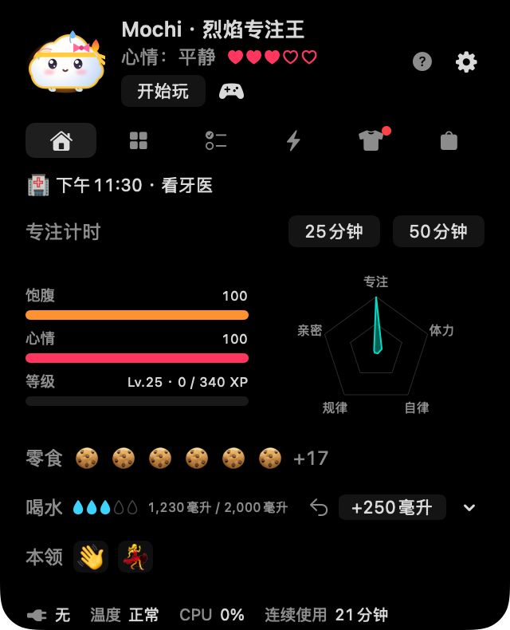
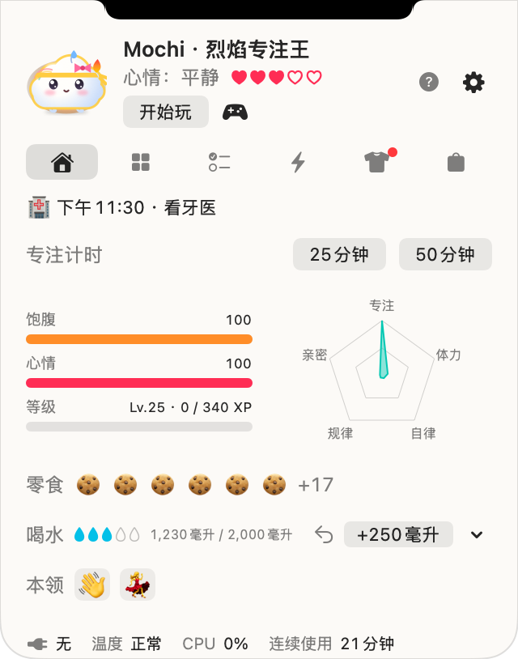
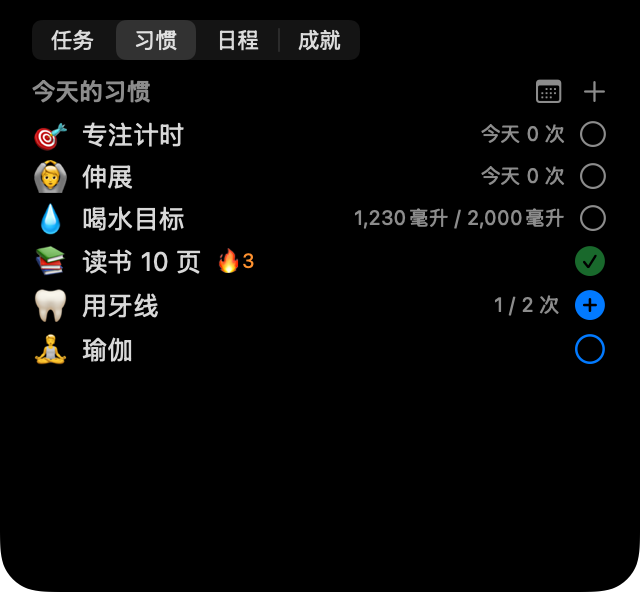

照顾你的一天
💧 喝水与伸展
一键记录一杯水，可以保存自己的杯子，也能补记离开 Mac 时喝的水。久坐时温柔提醒你伸展，还有 25 或 50 分钟的专注计时。
🌱 习惯与日程
按次数或时长设定自己的习惯，一个月的习惯日历，带提醒的日程，以及（连接后的）Mac 日历。
🏆 任务与成就
每天三个任务、34 个成就以及每周和每月挑战，奖励零食可以买衣服。
🎾 一起玩
摸摸它、在屏幕上给它扔球、玩三个小游戏，或者和朋友交换代码来对战。



所有图片都由应用实际的绘图代码画出。